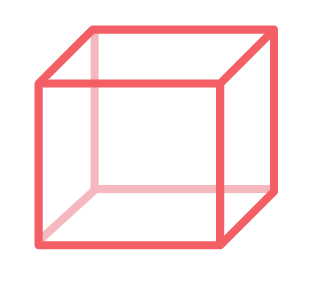
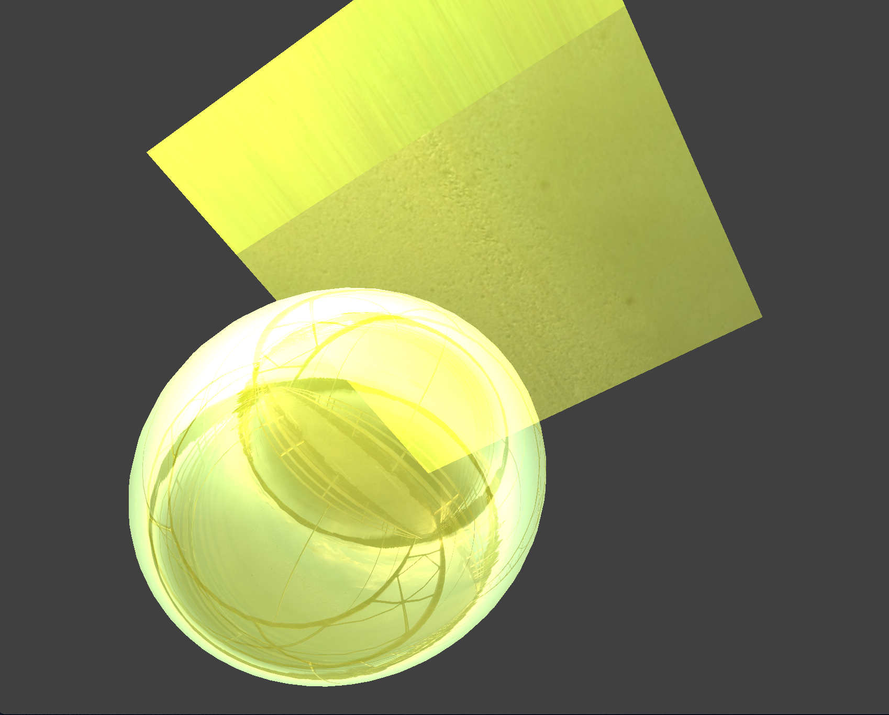
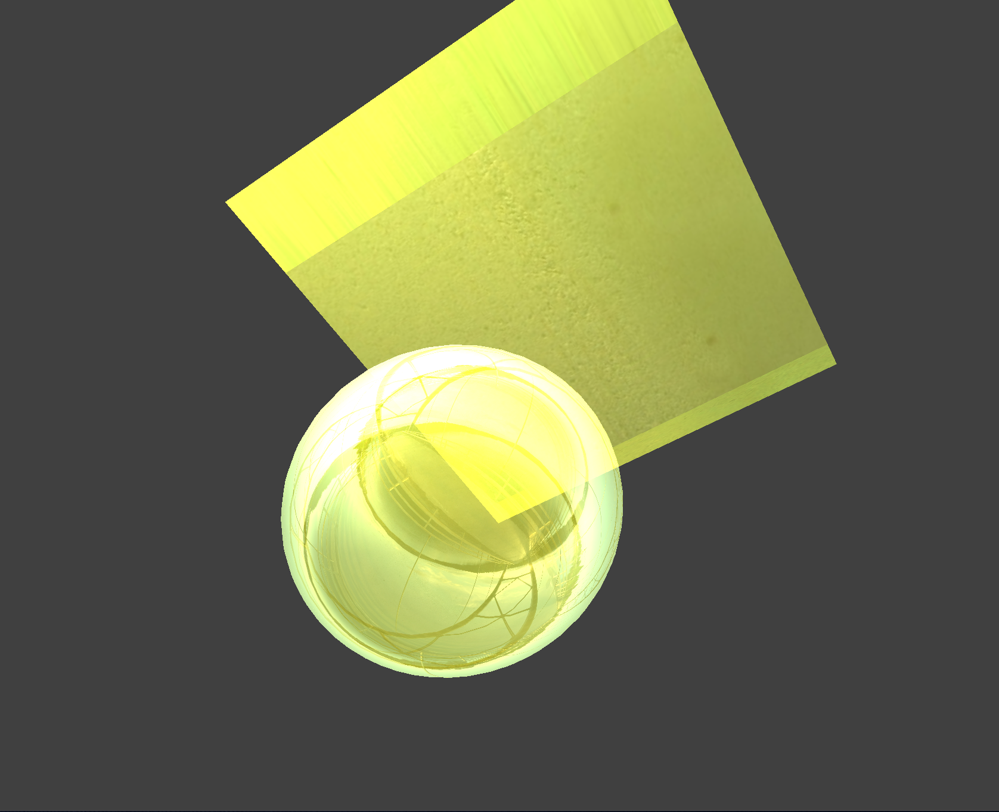
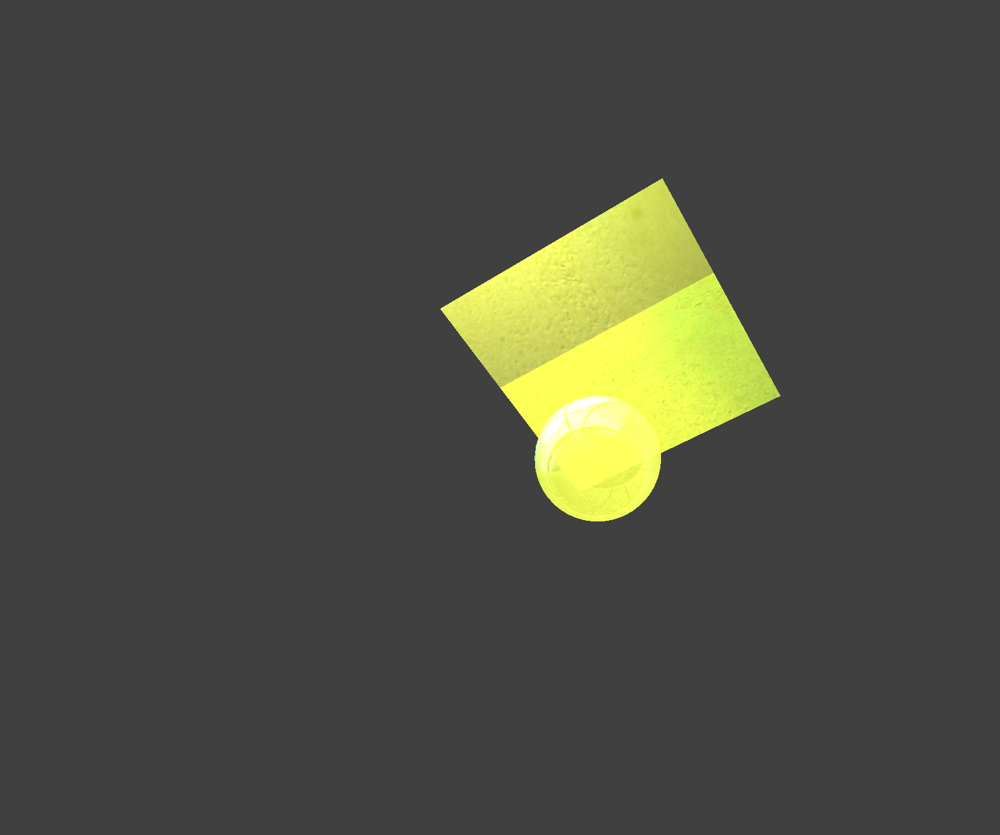
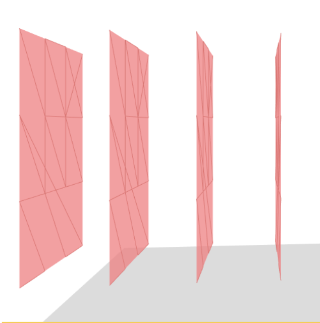
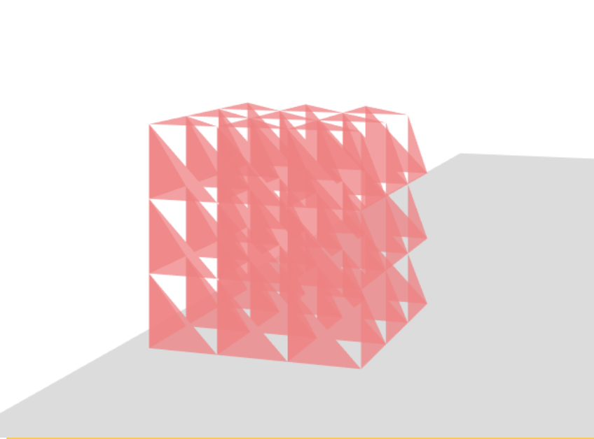
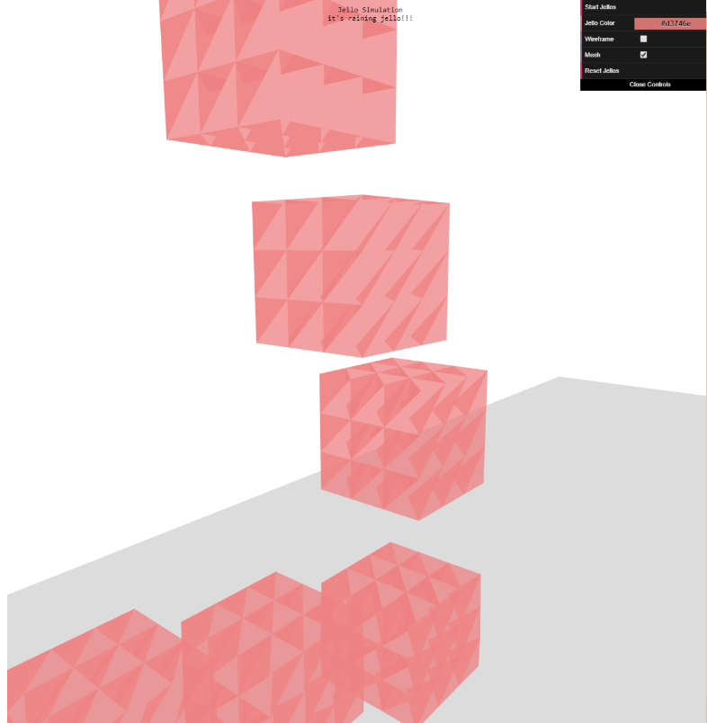

CS184 Spring 2019 Final Project
|

|
|
|
Derrick Li Tiffany Ho Ashley Park
We started by altering and adding to Project 4's code. We were able to add a third dimension to the mass and spring model and play around with the spring constraints to create a cube with the ability to jiggle. We also tried to create a custom shader for our jello that would combine reflection, refraction, Blinn Phong, and Beer's Law (increase opacity as distance between object and camera increases) . Unfortunately, there was a lot of overhead with the Project 4 code that we didn't have a complete understanding of that made it difficult for us to make changes and apply it to our idea.
|  |  |  |
We also tried starting from scratch and making our own OpenGL jello simulation. Although we were able to create some scenes, we realized that rebuilding everything ourselves would take too much time.
Ultimately we ended up using the three.js Javascript library and WebGL to create our scene. There was a much easier learning curve that allowed us to focus on the graphical components without worrying about boilerplate.
Conceptually our jello cubes use the same idea as the Cloth Simulation project but applied in three dimensions. We created a 3D lattice of spring masses and applied Verlet Integration and Hooke's law to simulate motion and physics. We visualized the jello by drawing a grouped mesh of many triangles. By doing this we can easily show the flexibility and bounciness of gelatin.
The techniques and algorithms used include:F = ma. Newton's Second Law of Motion was used to accumulate the
forces acting upon each of the individual point masses in the simulation, such as gravity and collisions. F_s = k_s * (||p_a - p_b|| - l). Hooke's Law was used to calculate spring correction forces
for structural and shearing constraints and apply them to point masses.x_(t+dt) = x_t + v_t * dt + a_t * dt^2. Verlet Integration was used to calculate
the new simulated positions of point masses based on the accumulated forces and time interval.|  |  |  |
F_a = p_a - avg(p_b), where p_a is the particle position, F_a is force applied on p_a,
and avg(p_b) is the average of particle positions in the other jello cube. In this manner, we apply an unequal force on the
particles of the jello cube, allowing for realistic "tilting" collisions.
We also wanted to include an interactive component to make our project more "fun" for the audience. We used Javascript's onClick event methods, DAT.GUI library, and THREE.OrbitControls to make our scene interactive.
We initally implemented an onClick method to allow users to place jellos to "rain" wherever they like. Up to this point, we only had hardcoded jellos interacting with each other. To allow users to decide new jellos' location, we had to rewrite our methods to calculate the correct jello vertices based on the onClick mouse's location.
DAT.GUI allowed us to provide buttons to toggle certain variables in our code. We experimented with adding parameters related to the jellos' physics. We tried to make the K spring constant, damping spring constant, jello mass and force of gravity to be up to the user. However we realized that these variables had to specifically set in order for the final result to look realistically like jello. When we changed our K and damping constants, our jello would oscillate severely and unrealistically in shape. When we changed the force of gravity and the jello mass, our jello would squash down into a 2d square on the plane or take forever to fall onto the plane. After a lot of trial and error, we ended up using the DAT.GUI to only toggle with the appearance of the jello, instead of the physics of it.
In our interactive component, there is a start button for a quick demo of adding three jellos and a reset button that would delete all the jellos on the screen. We also provided a color picker for the users to choose the jellos' color and we had checkboxes that determined whether the jello displayed its wireframe and mesh or not. To accomodate for these features, we had to reorganize our code once again. We had to create arrays that would represent the individual jellos and their wireframes and meshes that exist in the scene. To add a jello in the scene (whether from onClick or the start button), we had to make sure to add it and its wireframe and mesh to the relevant arrays. This way, we were able use these arrays to make our jello's appearances interactive. Adding or removing wireframes/meshes from the scene requires looping through the relevant arrays and calling scene.remove/add. To reset, we had to loop through the main jello array to delete each instance of jello from our simulation. The color picker feature was simple to implement and did not require reorganizing for the use of arrays. With Javascript's listen() method, we made sure that the color variable of the jello's mesh was listening and updating to the color picker's inputs.
Lastly, we utilized THREE.OrbitControls to make the camera viewing frame to be interactive. The THREE.OrbitControls allowed us rotate our view to see the top and side of the jello-plane scene, which aids in the visualization of how our jellos interacted with each other.
Here is a video that showcases our jello simulation!
A live version of our simulation can also be found here.
Derrick Li Created the 3D mass spring model for our gelatin cube, implemented the cubes' collisions with other jello cubes and the plane, made the final project video.
Tiffany Ho Made our simulation interactive (mouse-click jello drop, modify colors, toggle wireframe/mesh view, modify camera viewing angle, reset scene), made the milestone status report webpage.
Ashley Park Played with project 4 shaders and focused on the aesthetic properties of gelatin (transparency, reflection, refraction, Beer's Law), made the final report webpage.